User Guide
Welcome to the HTM150: Nuvolo for Technicians Labs! This guide is designed to help you navigate through the various labs included in this course. Each lab focuses on a specific aspect of using Nuvolo for biomedical technicians, providing hands-on experience and practical knowledge. For the purposes of this course, you’ll be acting as a technician in the Walla Walla facility in Washington. This facility has been using Nuvolo for a few years, and has a lot of available data to use as examples. All your location information will be set to this facility, and your devices and work orders will be pulled from their information.
Getting Started
- Access Nuvolo Development Environment: Use the DEV environment for all labs. Login via https://vasubprod1.servicenowservices.com/ with your VA.gov account.
- Set Up YourHTM Development Environment: Navigate to https://vasubprod1.servicenowservices.com/htm
- Navigate This Guide: Use the dropdown menu above to select a specific lab. All sections include step-by-step instructions, screenshots, and interactive elements like input fields for answers.
- Theme Toggle: Switch between light and dark mode using the toggle in the top right for better readability.
Tips for Success
- Explore Freely: Don't hesitate to click around Nuvolo—use the "History" tab to backtrack if needed. Avoid using your browser's back button, as it may not work well with Nuvolo.
- Document Your Work: Many labs include input fields for recording answers (e.g., work order numbers). Use these to track your progress and share with instructors.
- Troubleshooting: If you encounter issues, you're not alone! Ask your instructor(s) for help and you'll be helping out your peers too!
- Practice Hypotheticals: Labs encourage creating hypothetical work orders and assets to build confidence without real-world consequences.
If you have questions, reach out to your instructor or refer to the course materials. Happy learning and mastering Nuvolo!
Happy learning!
Lab 1: Orientation and Navigation
Part 1: Setting up Your Ward
For the purposes of this course, you’ll be acting as a technician in the Walla Walla facility in Washington. This facility has been using Nuvolo for a few years, and has a lot of available data to use as examples. All your location information will be set to this facility, and your devices and work orders will be pulled from their information.
- Navigate to yourHTM at https://vasubprod1.servicenowservices.com/htm
- After logging in, you should see a screen like this. Verify that you are in the test environment by the banner that appears along the top of the screen.
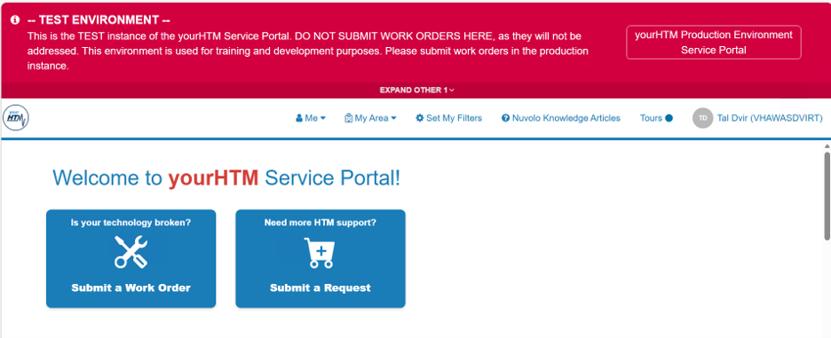
- Next, click Set My Filters from the top bar.
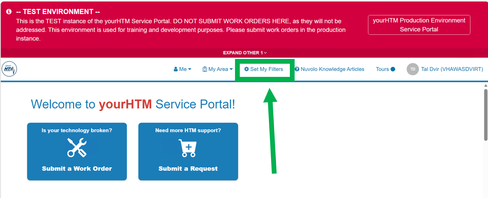
- You’ll be directed to a form with 2 required filters: VISN and Facility. Make sure that your VISN is set to VISN 20, and your facility is set to Walla Walla, WA. We will be using Walla Walla as our example facility for the rest of these labs.
- You’ll notice there are optional Additional Location Filters underneath these required fields. These filters will help narrow down your available devices; however, they are not required. Please leave them blank for now.
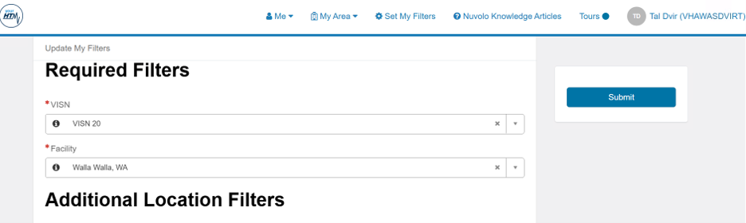
- Once your screen matches the above screenshot, click Submit. Congratulations, you have successfully set up your ward! Feel free to close this page. We’ll come back to yourHTM in a later lab.
Part 2: Nuvolo Profiles
Now, we’ll move into Nuvolo. Here, we have two more areas we need to verify our information in. Let’s walk through each of those now.
- Navigate to Nuvolo at https://vasubprod1.servicenowservices.com. If prompted, select your VA.gov account to sign in. You may be automatically logged in.
- You should be directed to the ITIL User Dashboard and see a screen like this. Verify that you are in the Training environment by looking for the banner along the top. It may be pink or yellow.
- Remember that the ITIL User Dashboard is the default homepage for Nuvolo, and will frequently be the first thing you see after logging in.

- Select the Profile Icon in the top right corner of your browser. It will be labeled with your initials.

- Confirm you see the following list. It will include your initials, your name, and your position along the top:

- Select “Profile” from the list

- Confirm that the information listed here is accurate. If it isn't, let your manager know so that they can correct it.

Next, we'll check out our User Profile
- Open the All Filter Navigatior by selecting "All" from the top left of the screen

- Search "My User Attributes" into the filter bar. Open My User Attributes:
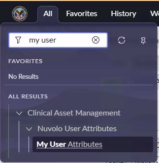
- Click on your name from the list. Make sure to click on the option under the Name column:
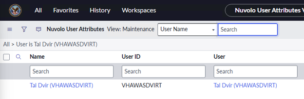
- Here, , you’ll find your assigned VISN, Facility, and Duty Station. Remember that for these labs, you are assigned to the facility of Walla Walla, WA. Verify that your information matches the information below.
- Duty Station indicates which facility your documented hours will roll up to. It’s important to make sure that your duty station is correct so that your hours are credited to the right facility. After your Nuvolo Go-Live, be sure to double check these fields in production and report any discrepancies to your manager as soon as possible.
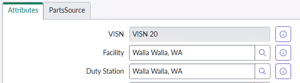
Great job! Remember, it’s important to make sure that all your location information is correct in both yourHTM and Nuvolo after your Go-Live date. For now, we’ll continue to use the Walla Walla facility as our example.
Part 3: Setting Up & Personalizing your Favorites
We’ve seen how to find things in Nuvolo using the All Filter Navigator. Now, let’s see how we can add things to our favorites to make them easier to find.
- Open the All Filter Navigator by selecting "All" from the top left of the screen
- Type “Clinical Asset Management” into your Filter bar.
- Note: If you don’t see this module in the list, please let us know. We will need to check and update your permissions.

- Hover your mouse over Clinical Asset Management to see a star icon appear on the right-hand side. Select the star icon, then select Done.:

- Note that you will see another result in this list labeled Clinical Asset Management Admin. We will not be using this module in this course. However, if you are an admin or manager, feel free to add this to your favorites as well as it contains a lot of important links. >
- Npw, open the Favorites menu to the right of All.
- Confirm your “Favorites” menu contains “Clinical Asset Management”

- Select the pin icon to pin your Favorites bar

- Reference your Favorites Bar and expand “Clinical Asset Management” by clicking on the arrow on the left side of its name

- We don't need all of the items in Clinical Asset Management. Let's practice removing a favorite. First, scroll down the list until you see “Emergency Events & Contacts”
- Hover your mouse over the name "Emergency Events & Contacts" and click the "X" to remove it from your Favorites Bar.

- Select Remove to confirm that you want to remove this item from your favorites.

- That module will no longer be found in your Favorites Bar. If you ever need to reference it, you can find it in the "All" Bar.
- Another way to clean up our favorites is by editing the entire menu at once. Click on the pencil and notepad icon at the top of the Favorites menu.

- Here we can customize icon, color, and remove favorites much more efficiently. Press the small "x"s to quickly remove the following items from your Favorites Bar:
-
a. External Companies
b. Transfer Orders
c. Purchase Requisitions
d. Contracts
e. Surveys
f. Knowledge
g. Work Projects
- Click Save Edits to finish editing this menu
Part 4: Tools and Shortcuts
We've covered how to navigate Nuvolo, access your preferences, view your profile, customize your Favorites, and navigate between pages. Now we want to make sure you can quickly and efficiently use Nuvolo. This part will focus on some tips and tricks to ensure that you are maximizing your time while using Nuvolo.
- First and foremost, let's filter on our favorites. We'll start with the Favorites Search Bar. Type "Work Order" into your Favorites Search Bar.
- NOTE: when using the Favorites Search Bar, you will only see menu items that have been added to your Favorites

- Let's use the filter in our All Menu/Filter Navigator. Click on “All” at the top of your browser and type “Promo Codes”
- Notice how “Cost Items” was not saved to your Favorites, but you were still able to find it. This All-Purpose Search Bar will allow you to find any menu item or feature even if it has not been saved to your Favorites.

- Another extremely useful feature is “History.” At the top of your browser, click on “History.” Confirm you can see the history of pages you’ve visited in Nuvolo, similar to your Browser History.
- NOTE: History will look different for each user – it is based on personal navigation history within Nuvolo
- NOTE: USE THE HISTORY TAB INSTEAD OF THE BACK BUTTON. Nuvolo doesn't work well if you use the browser back button.

- The HTM Nuvolo User Interface Dashboard will be an extremely helpful landing page as you go about your day-to-day work. This Dashboard will display items such as:
- My approvals
- Tickets assigned to me
- My team's work
- Tickets for me
- Since this dashboard will have valuable information, unique to you as the user, let's add it to Favorites. Click on "All" at the top left corner of your browser and type "Dashboards." Select "Dashboards" from the Modules

- In the Dashboards pane, select "All" and Search "HTM Technician User Interface"

- Once you're selected into the Dashboard, select the "Star" icon in the top to add it to your Favorites

Okay great, now you've established some easy-to-use shortcuts that will help your navigation with Nuvolo. Next, we want you to use those shortcuts to navigate and answer the following questions. As you complete the next part of the lab, keep in mind that there are typically multiple ways to find something within Nuvolo. For each questions, part of your answer will be HOW you found your answer. Don't forget about features like History, Recent, Favorites, Search Bars, dropdown lists, Dashboards, etc.
Part 5: Scavenger Hunt
Okay great, so now you’ve followed along as we introduced you to your profile, your preferences, dashboards, your favorites bar, and the most important Module you will be using: Clinical Asset Management. Next, I want you to use what you know and your current favorites bar setup to explore Nuvolo and find some features. Answer the questions below by navigating around the site and exploring. Don’t be afraid to ask questions!
- How can you open a link in a new tab in Nuvolo?
- Where can you find the HTM Nuvolo Technician Guide?
- Where can you go to change your time zone?
- Where can you see a list of all dashboards?
- Under “Favorites,” where does “Home” take you?
- Change one of your Favorites to the color purple.
Lab 2: Work Orders and Documentation
Part 1: Introduction to Work Orders
Now that you have some familiarity with Nuvolo and its User Interface, we can move on to one of the most utilized aspects of the system: Work Orders. Work Orders in Nuvolo serve as the central mechanism for tracking, managing, and documenting maintenance activities on medical equipment. Whether it’s scheduled preventative maintenance (PM), corrective maintenance, or incoming inspection, each task is initiated and recorded through a work order. Nuvolo provides a standardized digital platform, integrated with the VA’s ServiceNow system, that helps biomedical engineers and technicians capture essential details such as equipment ID, location, service dates, labor time, and parts used. This ensures regulatory compliance, accurate performance metrics, and consistent communication across facilities. In short, work orders in Nuvolo are the backbone of the VA’s equipment lifecycle management, ensuring safe, reliable operation of medical devices across the healthcare system.
- Reference your pinned Favorites Bar on the left-hand side of your browser and expand "Clinical Asset Management" if it is not already expanded

- Scroll down the Modules until you see “Work Orders” and expand the Module (there may be two, select the second one if that is the case)

As you can see in this sub-module, you are able to handle all Work Order matters within this module. You have the ability to view all PM and non-PM Work Orders, view Open/Pending Work Orders, view specific Work Orders assigned to you, and view Work Orders assigned to your group. Additionally, you have the ability to create a new Work Order.
Part 2: Creating a New Work Order
Now we will dive into the steps that you need to take to create a Work Order. We will only be highlighting the most important or required portions of the Work Order you will need to complete. However, when going through the lab, please take the time to complete all of the fields within the Work Order form. It will help your confidence in using the system and provide more detailed Work Orders in the future!
- Select “New Work Order”

- Let's familiarize ourselves with some of the required fields within a Work Order
- Select a Work Order Type using the magnifying glass icon

- Select an Asset using the magnifying glass icon

- Select an Asset Type using the magnifying glass icon
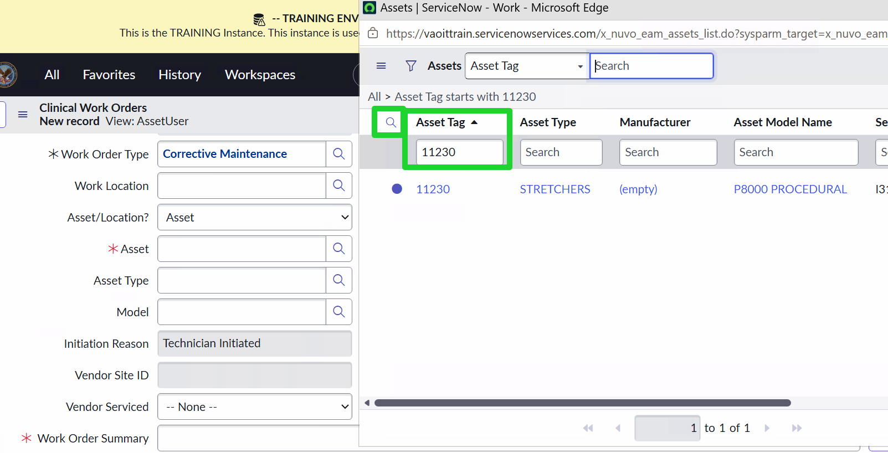
- Select a Priority level

- Write a brief Work Order Summary

These are the required fields that you must complete prior to moving to the next step of the Work Order. With that in mind, let's dive in and write an entire Work Order. Provide as much detail as possible – the expectation is that you fill out every field, not just the required ones. The extra detail is crucial for proper documentation.
Part 3: Create Your Own Work Order
- Create your own work order. This Work Order is completely hypothetical! Have fun with it, and use it as an opportunity to familiarize yourself with the Work Order Document. Document the following information and be prepared to share with the class:
- Due Date
- Number
- Work Order Type
- Asset – should be asset-based work order
- Show the magnifying glass next to the “Asset” so they can filter things down
- Asset Type – this auto populates when you select the asset!
- Priority
- Work Order Summary
- Brief Description
- Next, the Work Order needs to be assigned to a technician. Select “Pending Assignment” once all of your Work Order fields are complete
- If you double-click on the “Ready for Work”, it automatically moves it to the next state and saves
- Once the new page has loaded, explore the page and find the text field labeled “Assigned To.” Using this text field, assign yourself as the technician for this Work Order.
- Once you have assigned yourself as the technician, select “Ready for Work”
- Now select “Save”
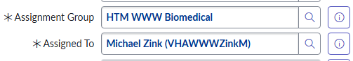
Congratulations! You have just created your first Nuvolo Work Order and assigned a technician to perform the work. You might be thinking, “Great, but where can someone go to view the Work Order that was just created?” Well today is your lucky day – now we are going to explore how to view an open/existing work order!
- Let's record the Work Order #:
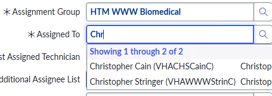
- Let's record the Work Order Summary:
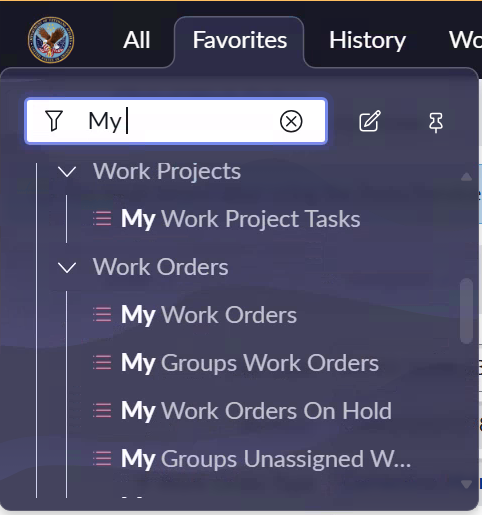
Part 4: Using the Global Search
Now that you have created a Work Order, let's practice finding it using the Global Search feature. The Global Search is located at the top of your Nuvolo interface and allows you to quickly search for records across the entire system.
- In the top right corner of your screen, you'll find the global search
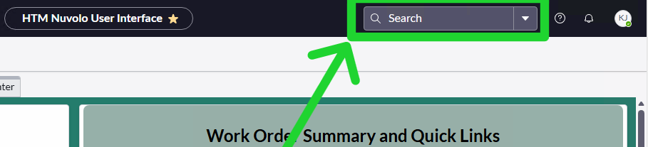
- Type in the Work Order # you recorded earlier. It may dynamically populate as you type, if not - just click enter after typing the full Work Order #. You'll see the work order you just created!
Note: You can also search by Work Order Summary to find your work order.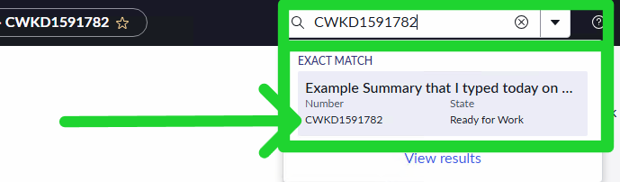
Optional Lab: Customizing Columns in List View
Introduction to Customizing Columns
In Nuvolo, the List View is a powerful tool that allows users to view and manage records efficiently. One key feature of the List View is customizing columns. Customizing columns allows users to tailor the List View to their preferences by adding, removing, or rearranging columns to display the most pertinent data for their tasks.
Customizing Columns in List View
- Navigate to the Work Orders "All PM"
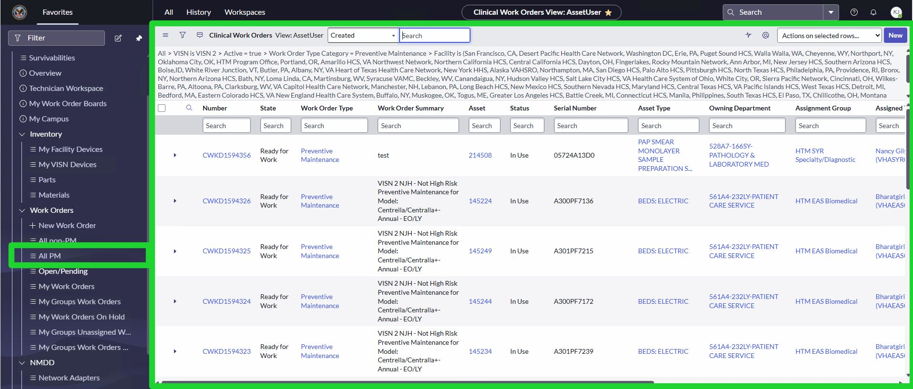
- In the List View, click on the Gear Icon in the top right corner.
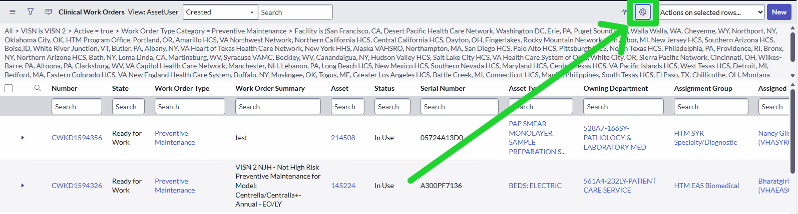
- From here, we can move columns from Available to Selected or vice versa. We can also rearrange the order of the columns.
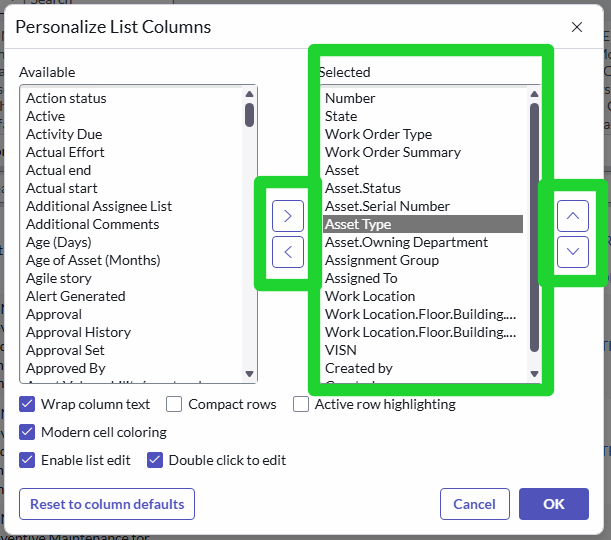
- Let's practice moving some columns.
- Move "Asset.Owning Department", "Assignment Group", and all "Work Location" items from Selected to Available. Note: When you remove dot-walked (ex. Asset.Owning Department) columns, you will not be able to add them back later. So be careful when removing these types of columns.
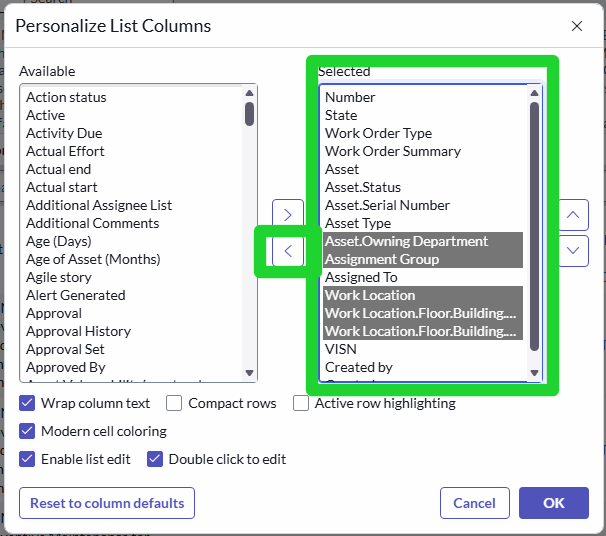
- Move "Due Date", "Actual Start", and "Initiated from" from Available to Selected. Hint: if you hold down "Ctrl" you can select multiple items at once.
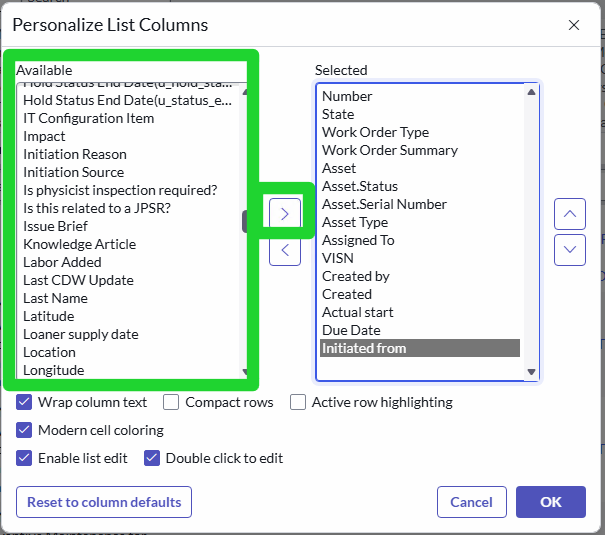
- Rearrange the order so that "Due Date" appears before "Assigned To"
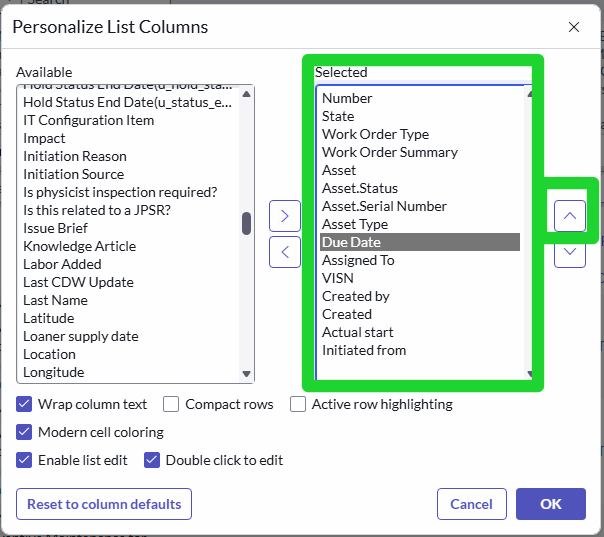
- Move "Asset.Owning Department", "Assignment Group", and all "Work Location" items from Selected to Available. Note: When you remove dot-walked (ex. Asset.Owning Department) columns, you will not be able to add them back later. So be careful when removing these types of columns.
- Click "Ok" to update the List View with your customized column settings.
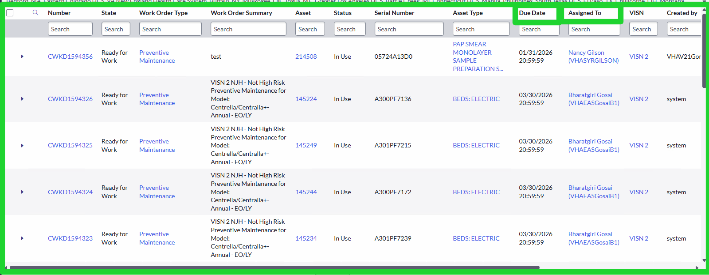
Filtering Your Lists
Now that you have customized your columns, let's practice filtering the List View to find specific records.- The first way we'll practice is with the column open text searches. In the "Work Order Type" column, type in "Maintenance" and press Enter.
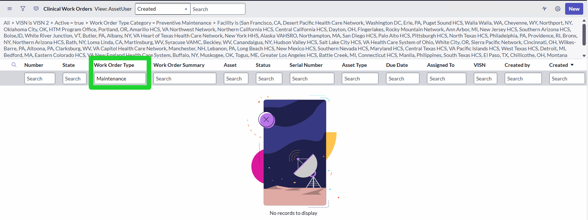
- Note that you have No Records to Display. This is because the search is looking for a "Starts with" match. We can verify this by clicking the Funnel Icon in the top left corner.
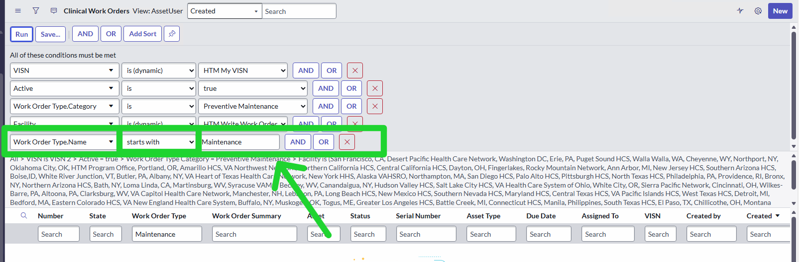
- To change this, we want to search for "Contains" instead of "Starts with". In the Work Order Type filter, include an * at the beginning and end of "Maintenance" so it reads "*Maintenance*" and press Enter.
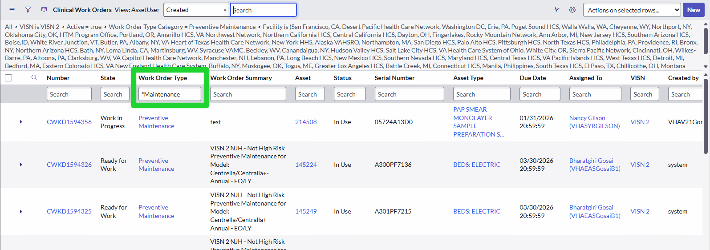
- Let's verify this in the filters one more time to see how it changed.
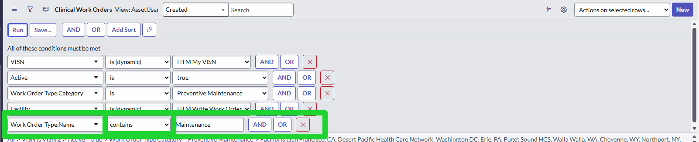
- Another way to filter your lists is by using the "AND" and "OR" buttons. Let's practice this now. Click the "AND" button next to the existing filter. Notice how an extra line appears for you to add another condition.
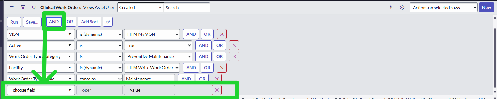
- We can filter on ANY field, even if it's not in the visible fields. For this final step, use the filters to find the work order you created in Lab 2. What filters were most useful to use?
Lab 3: Preventative Maintenance
Part 1: Introduction to Preventative Maintenance
The good news about Preventative Maintenance within Nuvolo is that it is very similar to writing any style of Work Order! You may actually notice a large amount of overlap between this lab and Lab 2. You will have another chance create a Work Order; except this time we will exclusively be focusing on a Preventative Maintenance Work Order. Keep in mind, most of your PM Work Orders will NOT be manually created. But we will manually create one today to reinforce Work Order training, and to provide you insight into the details that make up a PM Work Order.
- Reference your Favorites Bar and in the Filter Bar, type "Work Orders"

- Select “New Work Order”

- This page should look familiar! We are back on a page that allows us to create a new work order. Reference the “Work Order Type” text field and select the magnifying glass icon

- For this work order, select “Preventative Maintenance”

- From here, complete the following steps to finish Part 1 of the Lab:
- Select an Asset Type of your choosing
- Select a Due Date
- Select a Priority
- Complete the “Work Order Summary”
- Record the “Assignment Group” that gets generated
- Record the “Assigned To” technician that gets generated
- Record the Work Order Number
- Click Save!
- Congratulations! You have just created a Draft of a manually generated Preventative Maintenance Work Order. We’re far from done though… next, we need to be able to find and access this Work Order.
Part 2: Finding and Accessing Active PM Work Orders
- Reference your Favorites Bar. In the Search Bar, type “PM”

- Select “All-PM”

- Let’s take a look at the filters that come pre-assigned on the “All PM” page.

- These conditions are pre-assigned to this tab to help you easily find data and present you PM Work Orders based on your assigned role, facility, user permissions, etc.
- To reference the specific PM Work Order you just created in step one, let's add a filter. Select the “AND” button

- Configure your next filter to read as “Assigned To... is”

- Use the magnifying glass icon to find the name of the technician that the Work Order was assigned to. You'll use filters here in the same way we've done earlier.
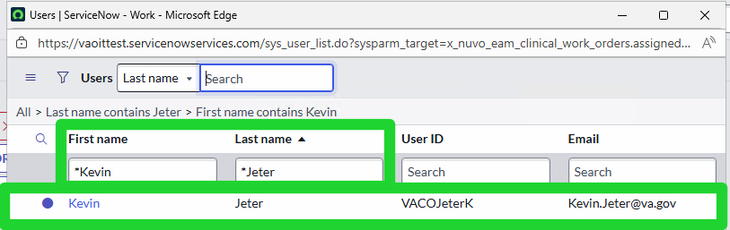
- The PM Work Order you created earlier will be in this list (if you assigned it to yourself!)
- Let's record the Work Order #:
- One tip for easy navigation is the Global Search. If you remember or have a work order number on hand, it's a lot easier to just search for it directly rather than applying filters. Let's try that now.
- At the top of your browser, locate the Global Search Bar

- Type in the exact Work Order Number you had created in Part 1. You can see it instantly appears in the dropdown list

Now that we've created a PM Work Order and discovered how to find them, let's recap some key information.
- In general, you will not need to manually create PM Work Orders. We manually created a PM Work Order in this lab to allow you more hands-on experience with Work Orders and to have a specific reference for follow-on lab use.
- Filters are a great way to find specific batches of data, to include Work Orders. Selecting the correct tab (in this instance, “All PM”) will come with pre-assigned filters to automatically show you data that applies to your specific Nuvolo account. If you want to alter the data that is being shown, feel free to play around with filters to meet your specific needs.
- The Global Search Function is the single best way to find specific data within Nuvolo. If you have a Work Order, Asset, etc. you can use the Global Search Function to reference that item
Part 3: What if Preventative Maintenance turns into Corrective Maintenance?
Okay close your eyes and picture this: You are scheduled to complete standard Preventative Maintenance on a piece of equipment. You start your PM check and realize that the equipment is broken and will require more work than the standard PM. What should you do?
- Ignore the problem
- Upgrade the PM Work Order to a Corrective Maintenance Work Order
Hopefully you selected number 2!
Let's walk through that scenario. Reopen the PM Work Order you created in Part 1 and Part 2 of this lab.
- Let's say work is In Progress for a PM Work Order.

- There are two ways to elevate a PM Work Order to a CM Work Order. Do NOT use the "Create CM Work Order" button at the top of the page. Instead, we'll close the Work Order with the Resolution Code "Corrective Action Required." This will automatically generate a CM Work Order AND close out the PM Work Order
- Scroll to the bottom of the page where you can set the "Resolution Code", "Service Complete Date", and "Resolution Detail". Fill in the "Service Complete Date" and add in some Resolution Details.

- Select the "Resolution Code" dropdown and select "Corrective Action Required"

- We must record Parts/Services prior to moving the work order into Pending Documentation. To do so, scroll down and select "New Parts/Services"
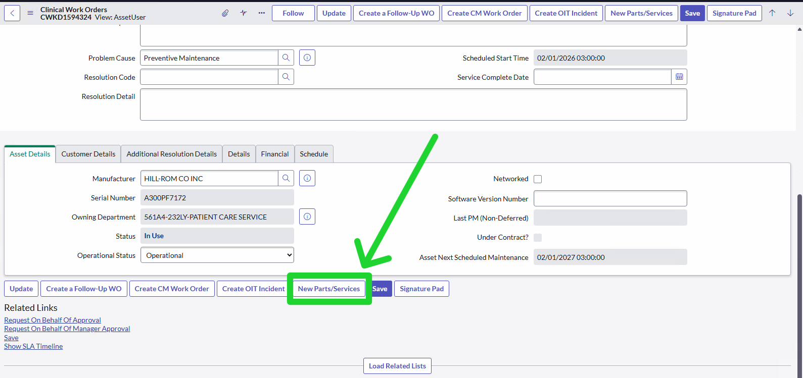
- In Work Duration, fill in 1 hour, select save, then select the back button within the work order.
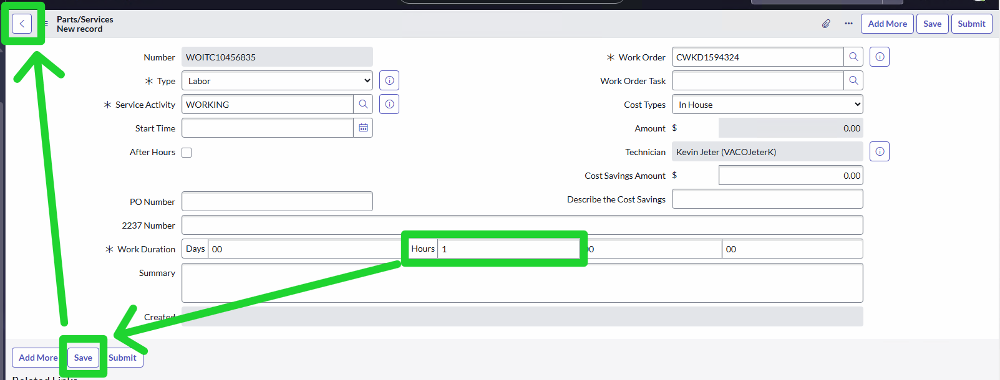
- Next, double-click "Pending Documentation".

- Once the Work Order is in Pending Documentation, "Pending Review" will become an option. Double click on "Pending Review" to move the Work Order to that state.
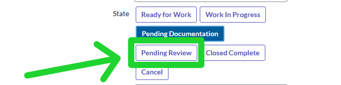
- Notice that once you do that, you'll get a confirmation message at the top of the screen that reads "Automatically moving to Ready to Work". This means that a Corrective Maintenance Work Order has been created!
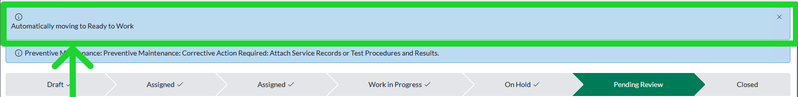
- Let's find our CM Work Order that was just created. Scroll to the bottom of the page and click "Load Related Lists"
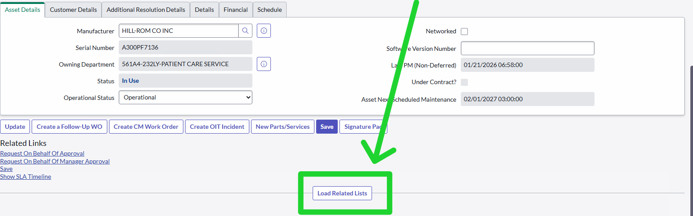
- Select the "Work Order History" tab and you'll see the CM Work Order that was just created! As the PM is closed, all work on this device will now be tracked on the CM Work Order.
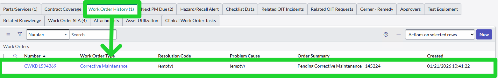
Now let’s say this entire Work Order has become a very high-visibility issue. As the technician, supervisor, etc. you want the ability to specifically follow this Work Order. It started as a standard PM, and now it’s a troublesome CM issue. You need continuous updates on this Work order.
- Reference the top of your page
- Select the “Follow” button

- You will get the following message on your Work Order page

- Now let's reference your notifications. Select the notifications icon (the bell)

- Use the settings icon to customize notifications as desired.

Okay, maybe that felt like a lot! But now you know how to
- Manually generate a PM Work Order
- Find and filter for PM Work Orders (and any type of Work Order)
- Search for specific Work Orders via Global Search Function
- Elevate a PM Work Order to a CM Work Order
- Follow and track a Work Order
You're well on your way to being a Nuvolo pro!
Lab 4: Asset Management
Mostly everything we've talked about so far has been centered around Work Orders – how to create them, how to view them, how to upgrade them, etc. You're probably tired of talking about Work Orders. So let's move on to another core pillar of your day-to-day Nuvolo use: Asset Management.
Part 1: Finding Equipment and Asset Management Familiarization
- Much like any other task on Nuvolo, let's start by searching in the "All". Search for "Models" and select it from the dropdown.

- You should see a list of data containing models, manufacturers, model numbers, and more. You'll see there are 516,000+ results!

- Here is where our filter button comes in handy. Click on the filter button at the top of the page
- Let’s say you only want to see equipment from a specific manufacturer – let’s assign filters to make that happen. Assign your filter to read: “Manufacturer” and “is”
- You now can look up equipment based solely on manufacturer. Let’s take a second to play around with these filter options. Explore the list of options and familiarize yourself with helpful data filters.
- Let’s quickly put your data filtering abilities to the test. Perform the following steps and record the Equipment Number
- You want to find a specific piece of equipment and you know the following information:
- Asset Type: CARTS: MEDICATION/STORAGE: POWERED
- Manufacturer: HOWARD MEDICAL
- Model Name: PARADIGM
- What is the equipment number?

- You want to find a specific piece of equipment and you know the following information:
- You should have gotten the number: CMOD0118262

- Now that you have a specific equipment number... let's say you wanted to access this equipment on Nuvolo again, but this time you know the exact equipment number... what feature could you use to directly search it?
- I hope you said... Global Search Function! Type in CMOD0118262 into your Global Search Function at the top of your browser
- Click "View Results"
- You should see the following page:

- Select the 1 result and you should see the following page:

- In this lab, we are only referencing this one particular piece of equipment that I randomly selected. But imagine you reference this page about equipment at your facility. On this page you should be able to see:
- Equipment Number
- Model Name
- Manufacturer
- Asset Type
- ID
- Price
- Compatibility
- Any relevant and useful information you would want to know about any piece of equipment
So now you've identified how to filter for different equipment, how to search specific equipment if you have the right number, and familiarized yourself with the functions of an equipment page.
Lab 5: Technician Capstone Lab
Congratulations on making it to the final lab of the HTM150 Nuvolo Technician Training! This capstone lab is designed to test your knowledge and skills acquired throughout the previous labs. You will be tasked with a series of challenges that simulate real-world scenarios you may encounter as a technician using Nuvolo. This lab will require you to apply your understanding of work orders, asset management, preventative maintenance, and navigation within the Nuvolo system. Be prepared to demonstrate your proficiency in creating, managing, and resolving work orders, as well as effectively utilizing the asset management features. This capstone lab is not only a test of your technical skills but also an opportunity to showcase your problem-solving abilities and attention to detail. Good luck, and remember to leverage all the tools and knowledge you've gained during this training!
Part 1: Customizing your Navigational Experience

Part 2: Work Order Creation and Management
Work Order Number:
Work Order Type:
Asset Type and #:
Priority Level:
Work Order Summary:
Part 3: Preventative Maintenance Review
Work Order Number:
Asset Type and #:
Priority Level:
Work Order Summary: